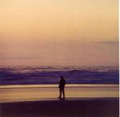

| Artist: | Bruce Main |
| Title: | Layers |
| Label: | self produced 09641 9 |
| Length(s): | 48 minutes |
| Year(s) of release: | 2005 |
| Month of review: | [11/2005] |
| 1) | Carnival | 1.11 |
| 2) | Celebrity Circus | 7.43 |
| 3) | Carnival Too | 1.45 |
| 4) | First Second | 6.07 |
| 5) | Gwendolyn | 7.34 |
| 6) | Father | 9.36 |
| 7) | Lies | 11.42 |
| 8) | You Don't Know | 3.03 |
First Second continues the line of Celebrity Circus: the music sound low key and the vocals unsteady. I think this is a productional quality for a large part. The instrumentation is dominated by acoustic guitar, although the middle section has a solo guitar spot. I am reminded of Rick Ray here, in fact, the composition has similarities to the softer side of Rick Ray as well.
Gwendolyn has a rather strong organ presence, with some electric guitar resounding low key in the back. The song revolves around Bruce Main's vocals, and to be honest: his voice isn't that appealing or strong. The song has some flute which makes Tull an easy reference. Striking is that thus far I have not heard any of Main's major influences: Peter Gabriel and Pink Floyd.
The tracks are lengthening. Father opens with guitar, the vocals take over quite soon. The melodies are usually quite okay, with a hint of folkiness. But the voice is simply not good enough, and the compositions do not hang together very well. There is plenty of variation in a track such as these, but there is too much meandering and too little to make up for that.
Lies is the longest song on this album. Again, the wailing guitar is dominant, reminding me of Andy Latimer this time. Underneath, at a slow pace we have the synths (the sound is quite distinctive). The laid back keys that follow bring a Canterbury feel to the affair, but it all moves a bit too slow. The vocals remind me strongly of Ian Anderson's lined by staccato drums. The additional vocals make for a nice firing up, but the meandering guitar solo that follows does not feel like it has any function. The middle of this song, moves very very slow. Then the Anderson like vocals return. Interesting track, but for its length not varied enough.
You Don't Know is the closing, relatively short acoustic track. This is very much a singersongwriter track, in which Bruce gets personal for the first time; the other songs are mainly about things which tend to occupy his thoughts. I think I prefer to hear him in a more personal mode. His voice is also a bit higher, more fragile.